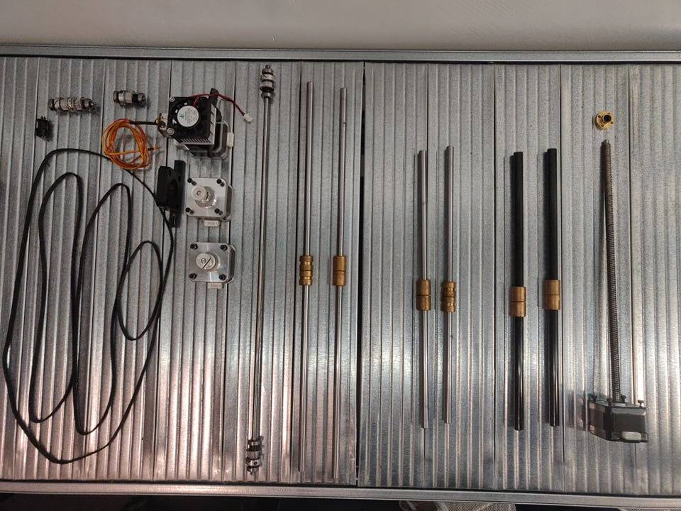

After hours of research we came to the conclusion of building our own 3D printer. We all have some experience with 3D printing and 3D modeling, both in SolidWorks and Inventor. We found a good video about how to build your own 3D printer and decided to implement the idea.
We had access to a 3D printer to make parts for the construction of the printer. We were also gifted an old MakerBot 3D printer to use for parts. Now we could make a project description and make a plan for this project.
We took the MakerBot appart and found evaluated what we could use.

We had 4 stepper-motors, 6 pieces of 8mm smooth rods and linear ball bearings, timing belt and pulleys. We also had Arduino Mega board that we could use for this project. That meant that we had to order some parts for the project. We ordered SMPS, T8 threaded rod, hot end and a shield for Arduino Mega (RAMPS 1.4).
We had prepared an order from Amazon that was supposed to be delivered within 5 work days. To replace the order we had to make a new order from Banggood. com and it was promised to be delivered no later than April 20th. As it turned out the order will not arrive before May 17th. We had ordered extruder, hotend, hotbed, threaded rods, RAMPS 1.4, Arduino Mega, Power Supply and more so it was devastating news.
However we were able to acquire all the parts that we needed. The biggest problem was getting the RAMPS 1.4 shield for Arduino Mega, but we were able to order it from Denmark, with a hotend and had it delivered within 4 days.
Marlin is an open source firmware primarily designed for RepRap project based FDM (Fused Deposition Modelling) 3D-printers using the Arduino platform. Most home made 3D printer utilize this firmware so we decided to do the same.
We used the Arduino IDE application to upload the program on to the board. But first we had to make some modifications to the Marlin code.
We made the design of the 3D printer with the Marlin firmware in mind so the modifications to the base code would be minimal. There were still some modifications that had to be made.
The default configurations for the axis movements were 80 steps per mm for the X and Y axises and 4000 steps per mm for the Z-axis. We would need to calculate these values for our 3D-printer.
Each of these values is calculated separately. For our belt driven axes (X and Y), the steps per unit is determined by the number of steps per revolution divided by the idler teeth, divided by the belt pitch (ie the spacing between teeth).
For threaded rod driven axes (our Z-axis), steps per unit is calculated as steps per revolution divided by the pitch of the rod.
For geared extruders, the calculation is steps per revolution times the gear ratio divided by the pinch wheel diameter times pi.
We got these values:
X-axis: 5,26 steps per mm
Y-axis: 5,26 steps per mm
Z-axis: 25 steps per mm
Extruder: 5,54 steps per mm
We then configured the Endstops in the program to the axis ends that we would attach the endstops to.
Finally we lowered the acceleration and jerk of the axis stepper motors for our first test.
The user interface most commonly used with the Marlin firmware is Printrun found at the Pronterface website. Pronterface is a GUI host for 3D printing: It can manage your printer as well as prepare, slice, and print your STL files. As such, you can use its graphic environment to easily configure and control your 3D printer through a USB cable. We used this software but our intention was to make modifications to it and calibrate it to our own user interface. We did not make it that far.
We had the idea to implement inbuilt, user-friendly, designs so that people who have access to the printer can print things they might need. It is a simple solution that allows everyone to use the printer in specific and usefull way.
We had managed to acquire all parts for the printer and finished the assembly. Next step in the process was to test the printer. We recorded the test and analyzed what happened.
We blew out the 5V regulator on the Arduino Mega-board and it appears that the board was also more damaged than that. We could not use it at all after this failed test. You can see the damaged Arduino board on the picture below. The problem occured when we were testing the 2 stepper motors for the z-axis. Before the 5V regulator blew out, and the board was to damaged to be used, we had positive results with the x- and y-axis. Even though the stepper motors did not move, they made a noice that told us there was to much strain on the motors and we needed to adjust some of the supporting parts. We also saw that the endstops operated correctly before the 5V regulator blew out.